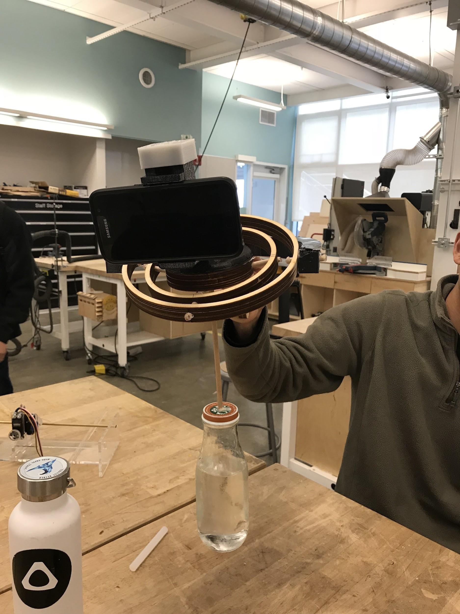
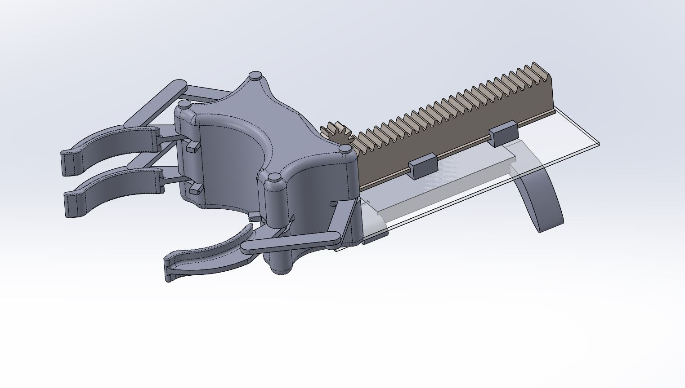

Apple, Samsung, and other smartphone manufacturers have marketed their smartphone cameras as becoming increasingly professional, as image and video stabilization features have dramatically increased in quality over the years, but there is a limit as to how much smartphone software and embedded hardware can accomplish. There is a large market of consumers who desire quality photography and videography for social media use. As an extension of this, these companies are looking for accessories that they can market alongside their products.
However, capturing high quality videos of moving object without a professional camera setup is not an easy task. For on-the-go filmmakers who want a simple, cheap, and user friendly external stabilization tool for their smartphones, our proposed gimbal is the ideal product. Our gimbal allows aspiring filmmakers to produce stable, high quality video recordings from their smartphones without having to use expensive, complicated rigs.
Although smartphone gimbals are already on the market, they usually come at a price that is not suitable for everyday consumers who are not heavily invested in professional photography. This gimbal is unlike any other product in the existing market, due to the simplicity of its design and its low overall cost. Market research shows that the price of these gimbals can range from around $60 to as much as $300 , whereas our gimbal would have a competitive price of $20. This was calculated by a 375% markup of a base cost of $5.32. It is a great entry level product for consumer photographers who are new to video production. As a nice finishing touch, our product also comes in a kit. Assembling the product is an engaging and rewarding experience in itself. It is the perfect product for the aspiring filmmaker.
For most people, reaching for something far away and grabbing it seems like a simple enough task. For some, however, it’s not so simple. There’s a huge demographic of people that require assistance reaching and grabbing items from a distance. This group would include the elderly, paraplegic, pregnant women, young children, or anyone who has an affliction that limits their movement.
Solutions to this problem exist but are, for the most part, incredibly limited in what they’re able to accomplish. They’re weak, bulky, and ultimately just able to pick up a minimal variety of items that could be beneficial toward the user. A more effective solution to this problem would be a device that is able to securely grab and hold onto any object that would otherwise fit in a human hand. In addition to this, it would be advantageous if the device were able to extend and collapse as needed, to allow the user to reach for items at different distances without moving too much themselves.
This device, the Bionic Reacher, attempts to improve upon the typical grabber design in these ways. The Bionic Reacher will be able to attach comfortably to the user’s forearm. From there, the user can extend or collapse the reach of the device electronically. The grabber at the end of the device is versatile enough to hold a wide variety of objects. The Bionic Reacher aims to help thousands of people become more independent. With our device, users will be able to reach for and grab a variety objects that they normally wouldn’t be able to.
But I implore you to check out one of my projects that does :)